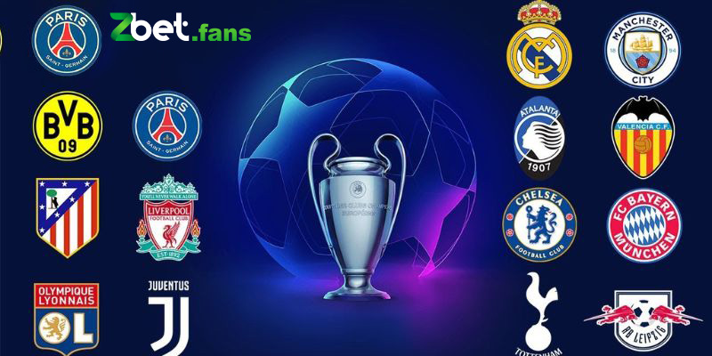

Xem Kèo Bóng Đá Cúp C1 châu Âu Chi Tiết Đầy Đủ Tại Zbet
POSTED ON 06/04/2024 BY ADMIN
Trong kèo bóng đá cúp C1 châu Âu thì bạn đã biết gì về thể loại này? Có những yếu tố nào quan trọng cần được xem xét khi tham gia vào cửa cược này? Hãy cùng Zbet khám phá mọi thông tin qua bài viết sau.
Thông tin về kèo bóng đá Cúp C1 châu Âu
Đây là những sản phẩm được thể thao Zbet tạo ra dành cho các trận đấu thuộc giải đấu này. Được thiết kế để phù hợp với đặc thù từ vòng bảng đến vòng knockout, các kèo cược này đáp ứng nhu cầu đa dạng của giải đấu danh giá.
Hiện tại, việc phát triển các loại kèo đặc biệt cho C1 là xu hướng của nhà cái Zbet nhằm thu hút người hâm mộ cá cược bóng đá. Với sự tham gia của các đội bóng hàng đầu từ nhiều giải đấu quốc gia, các loại cược này luôn chứa đựng những yếu tố bất ngờ và có cơ hội trả thưởng cao. Mỗi cửa cung cấp một tỷ lệ thưởng khác nhau, tạo ra những trải nghiệm cá cược độc đáo, hấp dẫn.
Tìm hiểu thông tin về kèo bóng tại ZbetTìm hiểu về kèo bóng đá cúp C1 châu Âu
Tìm hiểu về kèo bóng đá cúp C1 châu Âu
Hiểu rõ về những đặc điểm nổi bật của Champions League, đây chính là thời điểm lý tưởng cho những người đam mê cá cược. Dưới đây là những khám phá các kèo cúp C1 châu Âu đang thu hút sự quan tâm lớn hiện nay.
Kèo Châu Á
Kèo châu Á là một loại cược rất được ưa chuộng không chỉ trong các trận đấu của Cúp C1 mà còn ở nhiều giải đấu bóng đá khác. Bao gồm nhiều hình thức như chấp đồng banh, chấp nửa trái, chấp một nửa…
Các đội bóng tham gia Cúp C1 đều là những đội hàng đầu với các cầu thủ nổi tiếng. Dẫn đến việc chênh lệch giữa hai đội không quá lớn, do đó số bàn chấp thường không cao.
Kèo Tài Xỉu
Kèo O/U hay còn được biết đến với tên gọi Tài Xỉu, là một trong những loại cược được ưa chuộng tại Champions League. Cơ hội thắng cược ở đây phụ thuộc vào tổng số bàn thắng mà hai đội ghi được. Cho phép anh em chọn lựa giữa cược Tài (nhiều bàn thắng) – Xỉu (ít bàn thắng).
Số bàn thắng trong các trận đấu của kèo bóng đá cúp C1 châu Âu thường liên quan đến chiến thuật tấn công hoặc phòng ngự mà mỗi đội áp dụng. Việc phân tích kỹ lưỡng về phong độ và lối chơi của hai câu lạc bộ sẽ giúp bạn đưa ra quyết định cược chính xác hơn.
Kèo châu Âu
Đối với những người mới bắt đầu cá cược tại Zbet, khuyến nghị đầu tiên là nên tập trung vào kèo châu Âu. Loại này không chỉ dễ hiểu mà còn tăng khả năng chiến thắng ngay cả cho những người chơi mới.
Khi bạn kiểm tra các tỷ lệ cược mới nhất từ nhà cái, hãy chú ý đến kèo châu Âu đồng thời đặt cược vào một trong ba lựa chọn. Ví dụ như hòa (X), chủ nhà thắng (1), hoặc khách thắng (2).
Đa dạng mọi tỷ lệ cho anh em thoải mái chọn
Xem kèo bóng đá C1 châu Âu tại Zbet
Zbet thường xuyên cập nhật bảng tỷ lệ cược, giúp người chơi phân tích và đặt cược cho các trận đấu trong khuôn khổ Champions League. Các chuyên gia sẽ phân tích sâu sắc về hai đội tham gia để cung cấp tỷ lệ cược chính xác nhất cho ngày hôm đó.
Những điều cần xem ở Zbet khi chơi kèo
Zbet cung cấp bảng kèo chi tiết
Bảng tỷ lệ kèo bóng đá cúp C1 châu Âu được thiết kế hiện đại, với phông chữ nổi bật trên nền màu trắng. Giúp thông tin về các trận đấu cũng như loại cửa cược được trình bày một cách rõ ràng và dễ dàng phân biệt.
Người chơi tham gia tại hệ thống có thể dễ dàng tìm kiếm, thu thập thông tin cần thiết. Liên quan đến kèo châu Âu, châu Á, O/U, cũng như nhiều loại cược phụ hấp dẫn khác.
Bảng tỷ lệ tổng hợp cung cấp bởi chuyên gia cho phép người chơi đặt cược vào một loạt tỷ lệ kèo bóng đá C1 đa dạng. Bên cạnh đó, bảng này được tích hợp chức năng xem danh mục từng giải đấu.
Luôn cập nhật tỷ lệ kèo Cúp C1 thường xuyên
Tỷ lệ cược cho kèo bóng đá cúp C1 châu Âu luôn được cập nhật liên tục bởi nhiều trang web. Bạn sẽ được đảm bảo có cơ hội tiếp cận với thông tin cập nhật sớm nhất. Đừng quên kiểm tra tỷ lệ ở nhà cái ngày hôm nay để có update mới nhất và chúc anh em có những trải nghiệm cá cược thú vị.
Kinh nghiệm cực đỉnh khi soi kèo bóng đá cúp C1 châu Âu
Trong quá trình đặt cược, nếu bạn phát hiện tỷ lệ kèo châu Âu, Châu Á đều có xu hướng giảm. Đây có thể là dấu hiệu mạnh mẽ rằng đội chủ nhà sẽ thắng. Hãy nhớ luôn cập nhật, vì điều này hỗ trợ rất nhiều cho việc phân tích, dự đoán chiến lược của nhà cái. Vì vậy, anh em nên theo dõi liên tục từ 3 đến 5 ngày trước trận đấu.
Nếu tỷ lệ kèo bóng đá cúp C1 châu Âu vẫn biến động mạnh ngay trước giờ trận đấu. Cần phải thận trọng, tốt nhất là không nên đặt cược vào thời điểm này. Có khả năng đây là chiêu trò của nhà cái nhằm cân bằng tỷ lệ cược đồng thời giảm thiểu rủi ro cho họ.
Cũng nên tránh đặt cược vào những kèo không phổ biến, bởi chúng thường ít người chơi tham gia. Làm giảm sự cân bằng của thị trường cược và theo đó, mức độ an toàn cũng giảm. Trong những tình huống như vậy, nhà cái thường giảm tỷ lệ thắng xuống còn khoảng 70%.
Kinh nghiệm soi kèo C1 xương máu từ cao thủ
Các kèo bóng đá cúp C1 châu Âu luôn thu hút người chơi bởi sự hấp dẫn đặc biệt của chúng. Giải đấu này nổi tiếng với mức độ cạnh tranh cao và những trận đấu đỉnh cao. Cung cấp không ít cảm xúc kịch tính, hấp dẫn cho các bet thủ. Mong rằng, thông qua bài viết này của Zbet, quý độc giả sẽ tìm thấy niềm vui cũng như những trải nghiệm mới mẻ.